Medusa：用多个解码头加速大模型推理的简单框架
Medusa: Simple LLM Inference Acceleration Framework with Multiple Decoding Heads
GitHub star 为 2026-10-20 的快照。阅读状态、进度与收藏只保存在你的浏览器里。
逐节精读
这部分按论文的章节顺序，用本站自己的话把整篇论文从头讲一遍，附录里有分量的内容（实验设置、投机解码对照、屋顶线分析）也放进来了。读懂某个概念需要的背景知识，会在第一次用到它之前单独讲清楚（青色框）。每个结论都尽量说出“因为什么、所以什么”。论文以 CC BY 4.0 发布，所以原图直接放在讲到它的地方，并说明这张图怎么看；原图没画到的概念，用本站的示意图补上。标“推算”的数字是本站根据论文或代码算出来的，标“读图”的数字是从原图上估读的，都不是论文原话。每节末尾有英文原文的链接。
0 导读：这篇论文解决什么问题
大语言模型生成文字是一个 token 一个 token 往外蹦的：每生成一个 token，都要把整个模型从头到尾跑一遍。跑一遍的时间主要花在把几十 GB 的参数从显存搬到计算单元上，真正的计算只占一小部分。于是出现了一个看起来有点浪费的局面：GPU 的算力大半闲着，但用户还是要一个字一个字地等。
投机解码（speculative decoding）是解决这个问题的经典办法：先让一个小得多的“草稿模型”快速猜出后面几个 token，再让大模型跑一遍，同时检查这几个猜测，猜对的直接收下。它的麻烦在于草稿模型本身：要找到一个和大模型“想法一致”、又足够小的模型并不容易，往往得专门训练；部署时还得同时伺候两个模型。
Medusa 的想法是干脆不要草稿模型。它在大模型最后一层的隐状态上额外接几个很小的解码头（Medusa head）：原来的语言模型头预测下一个 token，第 1 个 Medusa 头预测下下个，第 2 个头预测再往后一个，依此类推。每个头给出自己最有把握的几个候选，把它们组合起来就是一棵候选树。大模型只需要跑一遍，借助一张特殊的注意力掩码（树状注意力），就能同时检查树上所有分支，最后收下最长的那条合格前缀。这一遍前向顺便算出的新隐状态，又正好供解码头猜下一轮的候选，所以整个过程里根本没有单独的“打草稿”步骤。
论文给了两种训练方式：Medusa-1 冻结原模型、只训练解码头，原模型一个参数都不动；Medusa-2 把解码头和原模型一起训练，头猜得更准、加速更多，但需要一套专门的配方才能不把原模型训坏。另外还有两个扩展：自蒸馏，用于拿不到原模型训练数据的情况；典型接受，用一个更宽松的规则决定收不收候选，换来更长的接受长度，代价是不再保证输出和原模型的分布完全一致。在批大小为 1、以 Hugging Face 默认实现为基线的设置下，Vicuna-7B 上 Medusa-1 快 2.18 倍，Medusa-2 快 2.83 倍。
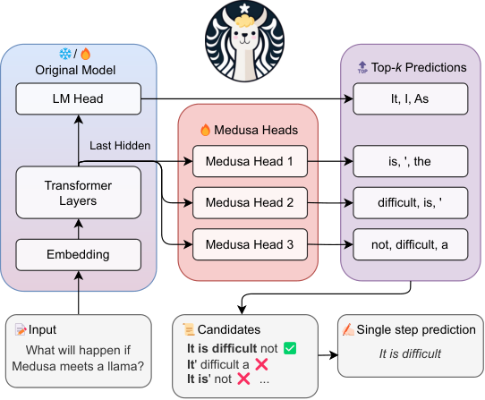
读完这部分，你应该能回答这几个问题：
- 为什么让大模型“一次检查 64 个 token”和“只生成 1 个 token”花的时间差不多？到多少个 token 就不再划算？
- 一个 Medusa 头长什么样，有多少参数？它和独立的草稿模型相比，好在哪里、弱在哪里？
- 树状注意力的掩码和位置编号是怎么安排的？验证完以后，KV 缓存怎么处理？
- Medusa-1 和 Medusa-2 各自怎么训练？Medusa-2 的三条“保命”策略分别防的是什么？
- 典型接受的判据是什么？它为什么比拒绝采样接受得多，又为什么不再是无损的？
- 没有训练数据时，自蒸馏怎么做？为什么联合训练主干时必须用软标签？
- 2.18 倍、2.83 倍这些数字是在什么条件下测的？换成更强的基线、更大的批，还剩多少？
- 后来的 Hydra、EAGLE 为什么能超过 Medusa？主流推理引擎为什么一个个放弃了 Medusa？
- \(h_t\)：原模型在第 \(t\) 个位置最后一层的隐状态（hidden state），维度为 \(d\)；词表大小记为 \(V\)。
- \(K\)：Medusa 头的个数。第 \(k\) 个头（\(k=1,\dots,K\)）用 \(h_t\) 预测第 \(t+k+1\) 个位置的 token，预测分布记为 \(p_t^{(k)}\)；原来的 LM 头预测第 \(t+1\) 个位置，记为 \(p_t^{(0)}\)。
- \(s_k\)：构造候选树时，第 \(k\) 个头取前 \(s_k\) 名预测。
- 加速率（acceleration rate）：平均每个解码步产出多少个 token，普通解码为 1.0。本站也把它叫作“每步产出”，它和其他论文里的“平均接受长度”是一回事（是否把每步必得的那 1 个 token 算进去，各论文口径不一，阅读时要留意）。
- 单步开销（overhead）：Medusa 一个解码步的平均耗时 ÷ 普通解码一步的耗时。
- 加速比（speedup）：真实耗时的提升倍数。论文附录 B.1 给出三者的关系：加速比 = 加速率 ÷ 单步开销。
1 引言：既然投机解码管用，为什么还要甩掉草稿模型
模型参数存在 GPU 的显存（HBM）里，计算单元在芯片上。每生成一个 token，都得把全部参数从显存读到计算单元一次。以论文主力模型 Vicuna-7B（基于 Llama-2-7B，约 67.4 亿参数）为例，FP16 存储共约 13.5 GB。论文附录 G 用的 A100-80GB-PCIe 显存带宽为 1,935 GB/s，光读一遍参数就要约 7.0 毫秒（推算）。
再看计算量：处理一个 token，每个参数大约做一次乘法和一次加法，共 2 × 67.4 亿 ≈ 135 亿次浮点运算。A100 的 FP16 矩阵算力峰值为 312 TFLOP/s，算完只要约 0.04 毫秒（推算）。也就是说，生成一个 token 时芯片 99% 以上的时间在等数据，这种状态叫受显存带宽限制（memory-bandwidth-bound）。论文开篇就把这一点当作出发点。
关键推论是：如果一次前向不是处理 1 个位置，而是同时处理 64 个位置，参数仍然只读一遍，计算量变成 64 倍，也只要约 2.8 毫秒，仍然藏在读参数的 7 毫秒里面。直到同时处理的位置数接近 312 ÷ 1.935 ≈ 161 个（FP16 下每个位置的“运算 / 字节”约为 1），计算时间才追上读参数的时间，再往上加位置，耗时就开始按比例增长。这个分界点就是屋顶线模型的拐点，详见 FlashAttention 精读 §2.2 和 推理基础页的屋顶线一节。
投机解码分三步：一个小的草稿模型先自回归地猜出 \(\gamma\) 个 token；大模型（目标模型）把前缀和这 \(\gamma\) 个草稿一起输入、只跑一遍，同时得到每个位置上自己的预测分布 \(p\)；然后从左到右逐个判断收不收。被收下的草稿直接成为输出，遇到第一个不收的位置就停，由大模型在那里补一个 token。所以每跑一次大模型，至少产出 1 个 token，最多产出 \(\gamma+1\) 个。
“收不收”的规则决定了输出会不会走样。Leviathan 等人和 Chen 等人用的是一种改造过的拒绝采样：草稿模型在某位置给出分布 \(q\)、采出 token \(x\)，大模型在同一位置的分布是 \(p\)，那么以概率 \(\min\!\big(1,\,p(x)/q(x)\big)\) 收下 \(x\)；不收时，从“剩余分布” \(\max(0,\,p-q)\) 归一化后补采一个 token。可以严格证明，按这个规则得到的每个 token 恰好服从 \(p\)，和大模型自己一个一个采样的分布完全相同。草稿的好坏只影响收下多少，不影响结果。完整推导见 投机解码精读 §2.3；下面的交互演示可以直接验证这个结论。
两个常被忽略的细节，后面会用到。第一，如果草稿和大模型的分布完全一样（\(q=p\)），这个规则的接受概率是 100%。第二，如果草稿不是“采样”出来的，而是固定地取第一名（相当于 \(q\) 在这个 token 上为 1），那么收下它的概率就是 \(p(x)\)，也就是大模型自己给这个 token 的概率。
有了这两块背景，引言的逻辑就很清楚了。既然瓶颈是“每一步都得读一遍全部参数”，提速的方向只有两个：提高每一步的算术强度（每搬一个字节做更多运算），以及减少解码步数。投机解码两者兼得：一次验证多个位置，提高了算术强度；一次收下多个 token，减少了步数。
但作者认为投机解码在实践中卡在草稿模型上，原因有三个。第一，草稿模型要小、又要和大模型“想法一致”，现成的往往不合适，常常得专门预训练一个；论文举例说，SpecInfer（Miao 等）报告为此用了 275 个 A100 GPU 小时。第二，单独训练的草稿模型和大模型之间存在分布差异，它猜出来的续写大模型未必认可。第三，在分布式部署里同时伺候两个模型很麻烦，例如张量并行要怎么切、两个模型怎么调度，Chen 等人的论文也提到过这一点。
Medusa 的替代方案来自 Stern 等人 2018 年的“块并行解码”（Blockwise Parallel Decoding）：在原模型顶上加几个额外的解码头，并行地预测后面几个 token。这些头训练起来参数高效，可以加到任何现成模型上；因为没有第二个模型，部署时也不用改分布式设置。
在这个基础上，作者提出两点改进。第一，以前的投机解码每一步只验证一条候选续写，算力没用够；Medusa 用解码头生成多条候选，只改一下注意力掩码就能在一次前向里同时验证。第二，可以照搬投机解码的拒绝采样来保证输出分布不变，但作者认为它没法进一步提高加速率，于是提出典型接受：只要候选“对原模型来说不算离谱”就收下，用温度来控制允许偏离原模型多远。
训练方面，作者按资源多少给了两档：资源有限、或者希望完全不影响原模型时，用 Medusa-1，它占用的显存很少，还可以像 QLoRA 那样把原模型量化后再训练头，因为主干不动，生成质量不受影响；资源充足、或者本来就要从基座模型做有监督微调（SFT）时，用 Medusa-2，主干和头一起训练，头猜得更准、加速更多。训练数据方面，如果模型是在公开数据集上微调的，直接用那份数据；如果数据不公开，或者模型经过了基于人类反馈的强化学习（RLHF）一类的对齐，就用自蒸馏生成训练数据。
实验主要在批大小为 1 的设置下进行，作者说这代表“在本地部署给个人用”的场景。测试的模型有 Vicuna-7B、13B（在公开数据集上训练）、Vicuna-33B（训练数据不公开）和 Zephyr-7B（经过 SFT 和对齐），在不同类型的提示上加速 2.3–2.8 倍。
- 摘要说 Medusa-1 是“无损加速”，这里的“无损”指的是原模型的参数没有改变。最终输出是否和原模型一模一样，还取决于验证规则：用贪心解码逐位比对时，输出和原模型自己贪心解码的结果相同（在数值误差范围内）；用典型接受时就不再相同（本页 §4.1）。
- arXiv 摘要页（元数据）写的是 Medusa-2 加速 “2.3–3.6 倍”，而 v3 正文 PDF 的摘要、引言和结论都写 “2.3–2.8 倍”。3.6 倍应该来自原文图 3 右图里单个类别（Extraction，3.62 倍）的最高值，不是模型整体的加速比。本站按正文的 2.3–2.8 倍引用。
2 方法总览与两个核心部件：Medusa 头和树状注意力（论文 §2、§2.1）
论文把 Medusa 放在投机解码的同一个框架里：每个解码步分三小步，生成候选、处理候选、接受候选。Medusa 用解码头生成候选，用树状注意力处理候选，用拒绝采样或典型接受决定接受哪些。最巧妙的地方在于第一小步几乎不花时间：解码头接在原模型顶上，所以第二小步（原模型验证候选的那次前向）算出来的隐状态，可以直接拿来给下一步生成候选。整个解码过程中，原模型每一步只跑一次，没有任何额外的串行“打草稿”前向。
按官方代码（medusa/model/utils.py）把一个解码步走一遍会更具体。假设当前已经确定的序列长度为 \(n\)，上一步结束时手里有两样东西：原 LM 头在最后一个被接受位置上的输出，以及 \(K\) 个 Medusa 头在同一位置上的输出。
- 定根。从 LM 头的输出里取出下一个 token（贪心取第一名；论文的典型接受也规定第一个 token 用贪心）。这个 token 是原模型自己的预测，一定会被收下，所以每一步至少产出 1 个 token。它是候选树的根。
- 长树。从每个 Medusa 头的输出里取前几名，按一份事先定好的树形（代码里叫
medusa_choices）挂到根下面。官方为 Vicuna-7B 准备的树形有 63 个节点，加上根一共 64 个 token。 - 验证。把这 64 个 token 一次送进原模型，配上树状注意力掩码（见下文 2.2），得到每个节点上 LM 头的输出和各 Medusa 头的输出。
- 接受。沿树上每条从根出发的路径，检查“下一个节点的 token”是否通过验证（贪心时要求它等于父节点处 LM 头的第一名），取通过得最长的那条路径。
- 收尾。把根和被接受的节点追加到输出，把它们的 KV 缓存挪到连续位置，并把最后一个被接受节点处的 LM 头和 Medusa 头输出留给下一步：下一步的“根”就是这里 LM 头的预测。
所以一步产出的 token 数等于 1（根）加上被接受的路径长度，论文的“加速率”统计的就是这个数的平均值。
2.1 Medusa 头：一层带残差的前馈网络（论文 §2.1.1）
第 \(k\) 个头的定义只有一行：
也就是说，隐状态 \(h_t\) 先过一个 \(d\times d\) 的线性层和 SiLU 激活，再和自己相加（残差连接），最后过一个和 LM 头同样形状的 \(d\times V\) 投影，得到整个词表上的分布。初始化很讲究：\(W_2^{(k)}\) 直接复制原 LM 头的权重，\(W_1^{(k)}\) 初始化为 0。这样一开始残差分支输出为 0，每个头就等于原 LM 头，预测的是“下一个 token”；训练过程只需要把它从“猜第 \(t+1\) 个”慢慢挪到“猜第 \(t+k+1\) 个”，起点很稳。激活函数用 SiLU，是为了和 Llama 系列保持一致。
为什么一层就够？因为 \(h_t\) 是原模型最后一层的表示，模型为了预测下一个 token，本来就把大量关于“接下来要说什么”的信息压在了里面。作者按照 Stern 等人的做法试了单层结构，发现效果已经令人满意。
和独立草稿模型相比，Medusa 头有三个好处。第一，它直接站在原模型学好的表示上训练，原模型可以冻结，单张 GPU 就能训练大模型的头。第二，头的输入来自原模型本身，学出来的分布和原模型天然贴合，缓解了草稿模型的“分布不一致”问题。第三，每个头和 LM 头一样只有一层，部署时就像多了几个输出头，不增加服务系统的复杂度，对分布式部署也友好。
“参数高效”要打个折扣来看。每个头都带一个完整的 \(d\times V\) 词表投影。按 Vicuna-7B 的 \(d=4096\)、\(V=32000\) 算，一个头约有 4096² + 4096 + 4096 × 32000 ≈ 1.48 亿个参数，5 个头约 7.4 亿，相当于原模型的 11%（推算）。这和 Hugging Face 上官方 medusa-vicuna-7b-v1.3 的头权重文件大小（约 1.48 GB，FP16）对得上。它们相对“微调整个模型”确实便宜，但推理时每一步都要多读这 1.48 GB，这是 Medusa 单步开销的来源之一（本站推测）。作为对照，EAGLE 论文报告它为 7B 模型训练的草稿部分只有 0.24B 参数，因为它直接复用原模型的嵌入层和 LM 头。
2.2 树状注意力：一次前向验证多条候选（论文 §2.1.2）
Transformer 里，第 \(i\) 个位置的 query 会和若干位置的 key 计算相似度，再对它们的 value 加权求和。哪些位置“可以被看到”由一张注意力掩码决定：掩码里为“允许”的位置正常参与计算，为“禁止”的位置在 softmax 之前被设成负无穷，权重变成 0。普通语言模型用的是因果掩码：每个位置只能看到它自己和它前面的位置，这张掩码是一个下三角矩阵。
此外，每个 token 还带一个位置编号，它通过位置编码（Llama 系列用 RoPE，见 RoFormer 精读）告诉模型“我是序列里的第几个”。通常位置编号就是 token 在输入里的下标，但这并不是必须的：只要给每个 token 填上它在“自己那条序列”里应有的编号，模型就会按那条序列来理解它。
生成过程中，前面已经确定的 token 的 key 和 value 存在 KV 缓存里（见 vLLM 精读 §2.2），新输入的 token 只需要计算自己的 key、value，再和缓存一起做注意力。
为什么要验证多条候选？如果每个头只取第一名，拼成一条候选，那么第 \(k\) 个位置被接受的前提是前 \(k\) 个头的第一名全部猜对，概率连乘下去很快就变小。如果每个头多取几名，“某一条组合恰好全对”的机会就大得多。投机解码的原始论文每步只验证一条采样出来的续写；论文指出，验证多条能提高每步的期望接受长度，但候选越多，计算量也越大，需要折中。
最直接的构造是取笛卡尔积：第 \(k\) 个头取前 \(s_k\) 名，第 1 个头的每个候选后面都可以接第 2 个头的任意一个候选，依此类推。这样就形成一棵树：第 \(k\) 层的每个节点下面分出 \(s_{k+1}\) 个子节点，从根到每个节点的路径就是一条候选续写。树上需要新处理的 token 总数为
以原文图 2 为例，\(s_1=2\)、\(s_2=3\)，第一层 2 个节点，第二层 2 × 3 = 6 个节点，一共 8 个 token，对应 6 条长度为 2 的候选。如果把 6 条候选当作 6 个独立序列放进一个批里，需要处理 12 个 token，还得把前缀的 KV 缓存复制 6 份；树结构让共享前缀的候选共用同一个节点，只要 8 个 token，而且不需要扩大批大小。
剩下的问题是：8 个 token 一起送进模型，怎么保证每条候选只“看见”自己那条路径？办法就是把树结构写进注意力掩码：每个 token 可以看到整个已确定的前缀（KV 缓存），以及树上从根到自己这条路径上的祖先，其他分支一律禁止。同时，每个 token 的位置编号按它在树中的深度来填，而不是按它在输入里的下标：同一层的兄弟节点位置编号相同。这个思路受到图神经网络里“把图结构嵌进注意力”（Ying 等，2021）的启发。
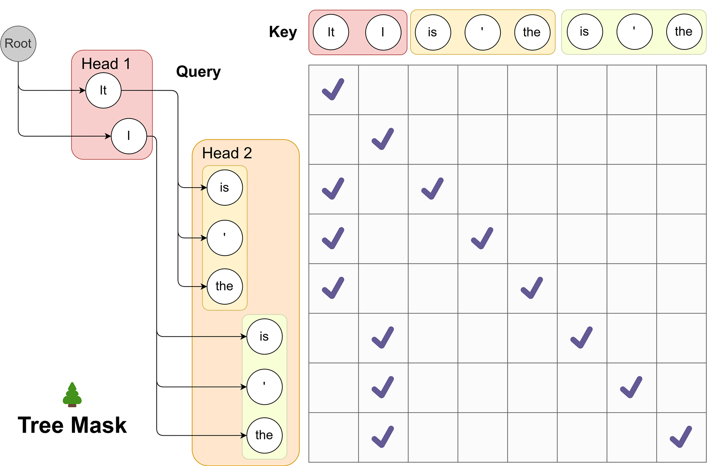
原图没画出位置编号，也没画验证之后 KV 缓存怎么处理。下面用一棵更小的树把这两件事补上：根是 LM 头的预测 “It”，头 1 取前两名 “is”“was”，头 2 取前两名 “a”“not”，一共 7 个 token。
update_inference_inputs 里的那次拷贝。参考 原文图 2 ↗。论文还指出，同期的 SpecInfer（Miao 等）和分级投机解码（Spector 与 Ré）也用了树结构，但它们是“自底向上”：用一个或多个草稿模型生成多条候选，再把它们合并成树。Medusa 是“自顶向下”：因为每个头给出的就是“这一层的若干候选”，树的形状可以直接按层定下来。笛卡尔积只是最简单、最规整的构造；不同头、不同名次的准确率差别很大，用同样多的节点可以搭出更好的树，这是本页 §4.3 的内容。
- 树状注意力不是免费的。树上有多少节点，验证那次前向就要多处理多少个 token。第 1 节的估算说明，只要总数远低于屋顶线拐点，耗时几乎不变；节点再多，就会从“受带宽限制”变成“受算力限制”，每一步明显变慢（本页 §5.4 有实测，§6 有模拟）。
- 任意形状的掩码需要注意力内核支持。官方实现基于 Hugging Face 的 Llama 代码，把一张稠密掩码加到注意力分数上；放进生产推理引擎时，需要内核支持“树形掩码 + 分页 KV 缓存”，这是后来引擎集成时的主要工作量之一。
- “树”只存在于验证阶段。Medusa 的候选是各个头一次性给出的，生成候选本身不需要按树逐层前向；这一点和 EAGLE 等“草稿模型逐层长树”的方法不同。
3 训练策略：只训头的 Medusa-1，和主干一起训的 Medusa-2（论文 §2.2）
3.1 Medusa-1：冻结主干，只训头（论文 §2.2.1）
训练目标就是普通的交叉熵：第 \(k\) 个头在位置 \(t\) 上要预测的是真实文本里第 \(t+k+1\) 个 token \(y_{t+k+1}\)，损失为 \(\mathcal{L}_k=-\log p_t^{(k)}(y_{t+k+1})\)。作者观察到 \(k\) 越大，\(\mathcal{L}_k\) 越大，这很自然：猜得越远越没把握。为了平衡各个头，给每个头的损失乘一个权重 \(\lambda_k\)：
按 \(\lambda_k=0.8^k\)，5 个头的权重依次是 0.8、0.64、0.51、0.41、0.33（推算）。这样安排还有一个好处（本站的解释）：越靠前的头越重要，因为树上越深的节点要被接受，前面每一层都得先猜对；把训练的注意力多放在前面几个头上，回报最高。
因为主干冻结，它在训练中只负责提供隐状态 \(h_t\)，所以可以把主干量化（比如 4 bit）来省显存。这和 QLoRA 的思路一样：主干用低精度存，只有要训练的那一小部分用高精度。论文说，这样一来在单张消费级显卡上也能给大模型训练 Medusa 头；训练只要几个小时，例如在 6 万条 ShareGPT 样本上给 Vicuna-7B 训练 Medusa-1，用一张 A100 PCIe 约 5 小时。
medusa/train/train_legacy.py 把各个头的交叉熵直接相加，没有 \(0.8^k\) 的权重；论文用的新版训练放在作者 fork 的 axolotl 里（src/axolotl/monkeypatch/medusa_utils.py），配置文件里的 medusa_decay_coefficient: 0.8 才对应论文的 \(\lambda_k=0.8^k\)。复现论文数字时应以后者为准。3.2 Medusa-2：主干和头一起训（论文 §2.2.2、附录 B）
冻结的主干有一个先天限制：它的 \(h_t\) 是为“预测下一个 token”训练出来的，关于更远位置的信息只是顺带有一些。如果允许主干也微调，它就可以把更多“后面要说什么”的信息编码进 \(h_t\)，头就会猜得更准，加速随之变大。风险也很明显：主干的参数一动，它预测下一个 token 的能力可能变差，而 Medusa 的最终输出正是由主干决定的，所以质量损失会直接体现在回答里。
全量微调一个 70 亿参数的模型，要为每个参数存梯度和优化器状态，显存开销是模型本身的好几倍。LoRA 的做法是：原来的权重矩阵 \(W\) 冻结不动，旁边加一个低秩的修正 \(\Delta W=BA\)，其中 \(B\in\mathbb{R}^{d\times r}\)、\(A\in\mathbb{R}^{r\times d}\)，秩 \(r\) 远小于 \(d\)（Medusa 用 \(r=32\)），只训练 \(A\) 和 \(B\)。因为 \(B\) 初始化为 0，训练开始时模型和原模型完全一样。QLoRA 在此基础上把冻结的 \(W\) 量化成 4 bit 存放，进一步省显存。LoRA 还有一个后面会用到的性质：把旁路关掉（不加 \(\Delta W\)），模型立刻变回原模型。
为了在联合训练时保住主干的能力，论文提出三条策略，每一条防的东西不一样：
- 组合损失：防止主干忘掉“预测下一个 token”。在头的损失之外，加上主干自己的交叉熵 \(\mathcal{L}_{\text{LM}}=-\log p_t^{(0)}(y_{t+1})\)，并用 \(\lambda_0\) 调节两者的比例：
$$\mathcal{L}_{\text{Medusa-2}}=\mathcal{L}_{\text{LM}}+\lambda_0\,\mathcal{L}_{\text{Medusa-1}}$$
- 不同的学习率：防止主干被改得太多。主干已经训练得很好，只需要微调；头还很生，需要多学。所以给头更大的学习率，让它们更快收敛，同时主干只做小幅调整。附录 B 的设置是头的学习率为主干的 4 倍。
- 头的预热：防止训练初期的大梯度把主干带偏。刚开始训练时，头的损失很大（它们一开始等于 LM 头，猜的是错位的 token），由此产生的大梯度会顺着网络传进主干，可能扭曲主干学好的表示。这个担心来自 Kumar 等人 2022 年的工作：直接微调整个预训练模型会扭曲已有特征，先只训练顶上的线性头、再整体微调效果更好。对应的做法是分两阶段：第一阶段只训头（就是 Medusa-1），第二阶段再把主干和头一起训。另一种做法是在训练中逐渐增大头的损失权重，作者说两种都有效。
三条合起来，就能在不损伤主干的前提下联合训练。这套配方还可以和有监督微调合在一起做：从基座模型出发做 SFT 时顺便训练 Medusa 头，得到一个“原生支持 Medusa”的模型。
sine 调度时它从 0 按正弦曲线升到 1。也就是说，逐渐升高的是头的损失权重，主干的损失一直是满权重。这和“预热头、保护主干”的意图是一致的，只是 §2.2.2 的文字写反了。附录 B.4 里的 “\(\theta_0\)” 应是 \(\lambda_0\) 的笔误。3.3 训几个头（论文 §2.2.3）
作者的经验是最多 5 个头就够了，所以建议训练 5 个头，再用 §4.3 的方法决定树的形状。树优化好以后，有时只用到 3 到 4 个头；多余的头直接不用就行，没有任何额外开销，因为各个头彼此独立，去掉一个不影响别的头。官方代码里名字带 stage2 的树（应对应 Medusa-2）为 Vicuna-7B、13B、33B 和 Zephyr 各准备了一棵，都只有 4 层，也就是只用了 5 个头中的前 4 个；vicuna_33b_stage1 只有 3 层（本站数 medusa_choices.py 得到）。
头越往后越没用的原因，用乘法就能看清：第 5 层的节点要被接受，前 5 个头必须同时猜对，即使每个头的第一名准确率有 0.6，连乘 5 次也只剩约 0.08（推算，0.6⁵）。这一层的节点几乎不贡献接受长度，却实打实地占用了验证的算力。
4 两个扩展和一个优化：典型接受、自蒸馏、搜索最优树（论文 §2.3）
4.1 典型接受：不求分布一致，只求“不离谱”（论文 §2.3.1、附录 A.2）
温度 \(T\)：把模型输出的 logits 除以 \(T\) 再做 softmax。\(T\) 小于 1 时分布变“尖”，概率集中到前几名；\(T\) 越大分布越“平”。\(T\to 0\) 就是贪心解码，只取第一名。
熵 \(H(p)=-\sum_x p(x)\log p(x)\)（单位 nat）衡量一个分布有多“没把握”：模型非常确定时（一个词占了绝大部分概率）熵接近 0；如果概率均匀分在 20 个词上，熵为 \(\ln 20\approx 3.0\)。
截断采样：语言模型的分布里总有一条长长的“尾巴”，上面是大量概率很小、往往不通顺的词。直接按原分布采样，偶尔就会采到这些词，让句子跑偏。截断采样在采样之前先把尾巴砍掉，只在一个“允许集合”里采样：top-k 只留前 k 名，top-p 留累积概率达到 p 的最少几个词。Hewitt 等人（2022）的 η 采样用一个随熵变化的门槛：概率低于 \(\min\!\big(\epsilon,\ \sqrt{\epsilon}\,e^{-H}\big)\) 的词被砍掉。它的直觉是：分布很确定时，砍得狠一点；分布很平、很多说法都合理时，门槛自动降低，多留一些词。
拒绝采样在这里为什么接受得少？论文说，Hugging Face 的 assisted generation 和分级投机解码的实践都发现，用拒绝采样保持分布时，温度越高，效率越低。论文给的直觉是一个极端例子：如果草稿模型和原模型完全相同，贪心解码时草稿会被全部接受；而拒绝采样“对两个模型分别独立采样”，即使分布完全一致，草稿仍可能被拒。
这句话需要仔细读（以下是本站的分析）。如果验证规则真的是“原模型独立再采一个 token，看和草稿是否相同”，那么即使两个分布一样，相同的概率也只有 \(\sum_x p(x)^2\)：例如分布为 (0.5, 0.3, 0.2) 时只有 0.25 + 0.09 + 0.04 = 0.38。但 Leviathan 等人的标准投机采样不是这样做的：按 \(\min(1,p/q)\) 接受，\(q=p\) 时接受率是 100%。真正让 Medusa 吃亏的是另一点：Medusa 的候选是各个头的前几名，是确定地挑出来的，不是从某个分布里采出来的。对这样的候选做无损验证，收下第一名 \(x\) 的概率就只剩 \(p(x)\)，也就是原模型给它的概率。温度一高，分布变平，第一名的概率下降，接受率随之下降。所以“温度越高越难接受”对 Medusa 这类确定性候选确实成立。
作者的立场是：实际使用中采样是为了让回答多样一些，温度只是用来调节“创造性”的；温度高，本来就意味着原模型愿意接受更多种说法，这时没有必要严格保持原模型的分布。于是提出典型接受：借鉴截断采样，只要候选 token 在原模型看来“不是特别不可能”，就收下。具体地，给定上下文 \(x_1,\dots,x_n\)，检查候选序列 \((x_{n+1},\dots,x_{n+K+1})\) 时，第 \(k\) 个位置的条件是
其中 \(\epsilon\) 是硬门槛，\(\delta\) 是和熵挂钩的门槛系数。判据背后有两条观察：概率相对高的词是有意义的；分布的熵高时，多种续写都说得过去。规则的其余部分是：每条候选从左往右检查，满足条件的前缀被接受；为保证每步至少产出一个 token，第一个 token 用贪心解码并无条件接受；最后在所有候选里取被接受的最长前缀。
用官方代码的默认值 \(\epsilon=0.09\)、\(\delta=0.3\)（\(\delta=\sqrt{\epsilon}\)，与 η 采样一致）算几个例子（推算）：
- 分布很确定，熵 \(H=0.5\)：\(0.3\times e^{-0.5}\approx 0.18\)，门槛取较小的 0.09。候选的概率要超过 9% 才收。
- 分布中等，\(H=2\)：\(0.3\times e^{-2}\approx 0.041\)，门槛约 4%。
- 分布很平，\(H=3\)（相当于概率均摊在约 20 个词上）：门槛约 1.5%。一个只有 2% 概率的候选也会被收下。
- 两段的分界在 \(H^*=\ln(\delta/\epsilon)=\ln(0.3/0.09)\approx 1.2\) nat：熵低于它时门槛恒为 0.09，高于它时门槛随熵指数下降。
论文从这个判据读出几条性质。第一，温度为 0 时只有第一名的概率不为 0，判据退化成贪心解码。第二，温度大于 0 时，只要 \(\epsilon,\delta\) 取得合适，贪心解码会选的那个 token 总能通过验证，因为它概率最大；这保证了典型接受至少能达到贪心验证的接受长度。本站补一个简单的推导，说明在 \(\delta\lt 1\) 时这一点总是成立：设第一名的概率为 \(p_{\max}\)，熵满足 \(H\ge -\log p_{\max}\)（香农熵不小于最小熵），所以 \(e^{-H}\le p_{\max}\)，于是门槛 \(\le\delta e^{-H}\lt p_{\max}\)。第三，一般来说温度越高，被接受的序列越长，作者说实验也印证了这一点。
附录 A.2 把典型接受放进截断采样的脉络里：top-k、top-p、typical decoding（Meister 等）和 η 采样都在定义“允许集合”，典型接受也是排除掉不太可能的候选；不同之处在于它不再要求输出和语言模型的分布严格对应。作者认为这样可以在不损害文本质量的前提下得到更高的效率。
evaluate_posterior 里有两条“典型接受”路径。fast 路径（MedusaModel.medusa_generate 的默认值）就是论文的判据：根取 LM 头的第一名，候选是各头的前几名，按门槛判断，在接受长度相同的几条候选里取似然最大的一条。这几步都是确定性的，所以 fast 路径下整个生成过程没有任何随机性，温度只通过熵影响门槛，它更像一种“放宽了的贪心”。非 fast 路径（MT-Bench 评测脚本里 --fast 默认不打开）则先从截断后的分布里随机采一个 token，再看候选是否和它相同，根也是随机采出来的。论文没有说明各个实验用的是哪条路径。另外，官方仓库的推理代码只实现了贪心、典型接受和 nucleus（top-p）三种验证，没有实现论文提到的、能保持原分布的拒绝采样。4.2 自蒸馏：拿不到训练数据时，让模型自己出数据（论文 §2.3.2）
前面一直假设有一份和原模型输出分布一致的训练数据，但这个假设常常不成立。一种情况是模型只公开权重、不公开训练数据。另一种情况更隐蔽：模型经过了 RLHF 一类的对齐，它现在说话的方式已经和当初 SFT 数据里的说法不同了。如果用 SFT 数据训练头，头学到的是“数据里接下来会说什么”，而验证时比对的是“模型自己接下来会说什么”，两者不一致，接受率就上不去。
解决办法很直接：让模型自己生成训练数据。先找一个和目标模型领域相近的公开种子数据集，比如聊天模型用 ShareGPT；只取其中的提问，让模型自己回答。要得到多轮对话，可以把种子对话里的提问依次喂给模型；像 Zephyr-7B 这样在对话双方的内容上都训练过的模型，还能“自问自答”，只给第一个问题，它就能自己往下生成多轮对话。
medusa_self_distillation 选项）。对 Medusa-1，这份数据已经足够。对 Medusa-2 却不行：作者发现，用这份自生成的数据（以其中的 token 为标签）训练主干和头，生成质量通常会下降；而且即使不训练头、只用这份数据训练主干，质量也会下降。这说明给主干的监督不能用“数据里实际出现的那个 token”，而要用原模型给出的完整概率分布，就像经典的知识蒸馏那样（论文引用了 Kim 与 Rush 2016）。于是主干的损失改为
普通训练用的是硬标签：在每个位置上，只告诉模型“正确答案是这一个 token”，相当于一个只在该 token 上为 1 的分布。知识蒸馏用软标签：把“老师”模型在这个位置上的完整分布交给“学生”去模仿，例如“is 60%、was 30%、seems 10%”。KL 散度 \(\mathrm{KL}(p\|q)=\sum_x p(x)\log\frac{p(x)}{q(x)}\) 衡量学生分布 \(q\) 和老师分布 \(p\) 差多远，它总是非负，只有 \(q=p\) 时才等于 0。
为什么软标签能保住主干、硬标签不能？论文只给了实验现象，本站补一个解释。自生成的文本是从模型分布里抽出来的一个样本，用硬标签训练，会把每个被抽中的 token 的概率往上推，模型的分布因此变得更尖、更偏向这一份样本里的偶然选择，于是偏离了原来的自己。软标签的目标就是原模型的分布本身：训练一开始 LoRA 的修正为 0，主干就是原模型，KL 正好为 0，处在最优点；之后只有头的损失会把主干往别处拉，而 KL 项会把它拉回来。这样，主干被牢牢“拴”在原模型附近。
直接这么做需要同时在显存里放两个模型：一个冻结的原模型提供软标签，一个正在训练的模型。作者的省显存办法是用 LoRA 微调主干：原模型就是“关掉 LoRA 旁路的同一个模型”，算软标签时把旁路关掉跑一遍，训练时再打开，不需要额外的显存（但每个批多一次前向计算）。最后一个提醒是：这种情况下最好用不量化的 LoRA，否则老师就成了量化后的模型，生成质量可能更低。作者 fork 的训练代码正是这样实现的：训练前在推理模式下关掉所有 LoRA 层算出原模型的 logits，再打开 LoRA 计算 KL；Zephyr 的配置文件用的也是不量化的 LoRA。
4.3 在固定的节点预算下搜索最优的树（论文 §2.3.3、附录 C）
笛卡尔积的树很规整，但很浪费。各个头、各个名次的准确率差别很大：头 1 的第一名可能有六成把握，头 3 的第三名可能只有百分之几。在笛卡尔积里，“头 1 第三名后面接头 2 第三名再接头 3 第三名”这种几乎不可能全对的路径，和最有希望的路径占用同样的节点。如果总节点数固定，就应该把节点留给更有希望的路径。
做法是：在一个校准数据集上统计每个头每个名次的准确率，记 \(a_k^{(i)}\) 为第 \(k\) 个头第 \(i\) 名猜对的概率（注意是“恰好第 \(i\) 名对”，等于 top-\(i\) 准确率减去 top-\((i-1)\) 准确率）。假设各个头猜对与否相互独立，那么由第 \(i_1,i_2,\dots,i_k\) 名组成的那条路径全部猜对的概率是 \(\prod_{j=1}^{k}a_j^{(i_j)}\)。树上每个节点都对应这样一条路径（不只是叶子，所有节点都算），一个节点被接受，当且仅当它这条路径全对。所以期望接受长度就是所有节点概率之和：
这个式子说明，往树上加一个节点，期望接受长度就恰好增加这个节点自己的概率。于是可以贪心地建树：每次在“和当前树相连”的候选节点里挑概率最大的加进去，直到节点数达到预算。本站补充一点：因为每个节点的概率都不超过它父节点的概率（多乘了一个不超过 1 的数），概率最大的 \(N\) 个节点本身一定连成一棵树，所以贪心选出来的正是全局最优的那 \(N\) 个节点。
附录 C 展示了为 Medusa-2 Vicuna-7B 搜出来的稀疏树：一共 64 个节点（含根），深 4 层，即用到 4 个头；准确率统计用的是 Alpaca-eval 数据集。附录的文字说这棵树先按笛卡尔积生成、再按各头前几名的统计期望剪枝得到，和正文“逐个加节点”的描述在操作上略有不同，但目标相同。官方代码里这棵树写成一个 63 项的列表 vicuna_7b_stage2，每一项是一条从根出发的名次路径；本站数了一下，4 层分别有 10、23、23、7 个节点。
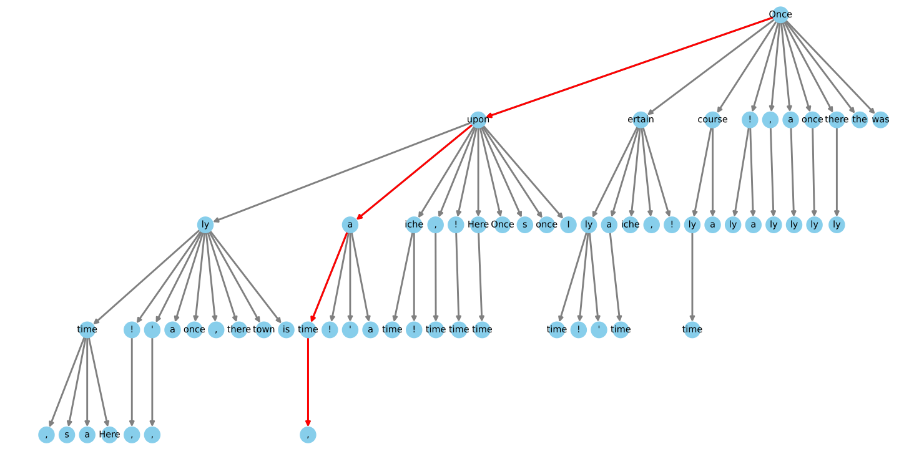
- “各头猜对相互独立”只是近似。实际上头 1 猜对的时候，上下文往往比较好猜，头 2 也更容易猜对，所以真实的路径概率和期望接受长度会和估计有出入。
- 这棵树是静态的：对每个模型在校准集上搜一次，之后每一步、每个问题都用同一棵树。不同任务、不同上下文下最优的树并不相同，后来的 EAGLE-2 就把树改成按草稿模型的置信度逐步动态生长。
5 实验：在 Vicuna 和 Zephyr 上快了多少，质量变了多少（论文 §3、附录 B、D、E、F）
5.1 实验设置与三个指标
模型。第一组实验用 Vicuna-7B 和 13B 的 v1.5 版本，它们从 Llama-2 微调而来，序列长度 4096，训练数据是公开的 ShareGPT 对话，所以可以直接用 ShareGPT 训练 Medusa 头（训练 2 个 epoch），用来比较 Medusa-1 和 Medusa-2。第二组实验专门检验自蒸馏，用的是两个拿不到“原配”训练数据的模型：Vicuna-33B（一个实验性版本，训练数据不公开；作者在脚注里说，问过 Vicuna 的作者，这个版本用的数据和 7B、13B 不完全相同）和 Zephyr-7B（经过 SFT 和对齐）。
MT-Bench 是 LMSYS 发布的一组多轮对话测试题，共 80 道，每道题有两轮提问，分为写作、角色扮演、推理、数学、编程、信息抽取、STEM、人文 8 类，每类 10 道。打分由 GPT-4 担任裁判，对每个回答单独打分（论文写的是 0 到 10 分），最后取平均。它原本是用来评“回答质量”的；Medusa 论文用它做两件事：一是让模型回答这些题、计时，算出加速比；二是看加速之后 GPT-4 给的分数有没有下降，作为“质量没变”的证据。
指标。附录 B.1 定义了三个量：加速率是平均每个解码步产出的 token 数，普通解码为 1.0；单步开销是 Medusa 每一步的平均耗时除以普通解码每一步的耗时；加速比是真实耗时的提升。三者满足：加速比 = 加速率 ÷ 单步开销。这个关系把 Medusa 的收益拆成了两半：加速率由头猜得准不准、树搭得好不好决定；单步开销由“验证几十个候选 + 多读几个头”的额外代价决定。
基线与批大小。论文说基线是“Hugging Face 的默认实现”，所有实验都是批大小 1。官方仓库的评测说明写得更具体：基线脚本只实现了贪心解码，用于测墙钟时间；仓库里公开的 Vicuna v1.3 Medusa 结果是在单张 A100 上跑的。
5.2 Medusa-1 与 Medusa-2：Vicuna-7B 和 13B（论文 §3.1）
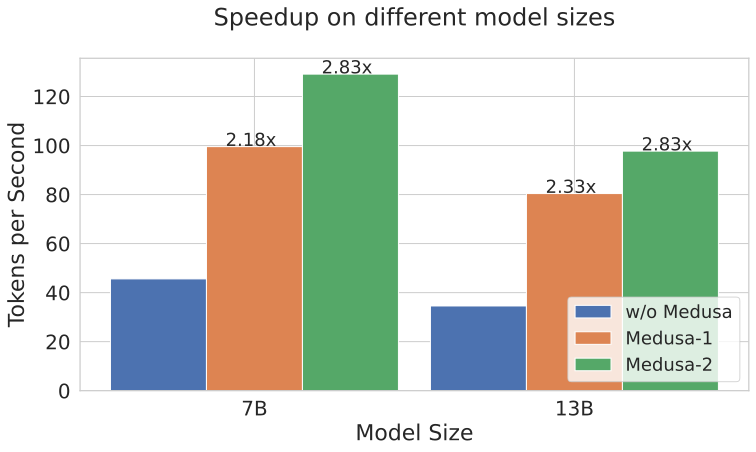
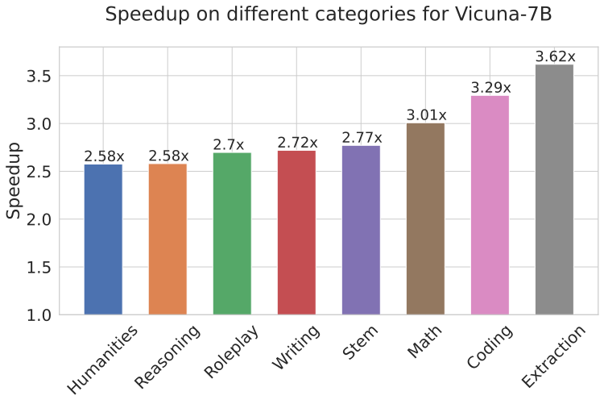
在 7B 上，Medusa-1 快 2.18 倍，Medusa-2 快 2.83 倍；在 13B 上，Medusa-1 快 2.33 倍，Medusa-2 同样快 2.83 倍。Medusa-2 比 Medusa-1 多出来的那部分，就是“让主干也学着为远处的 token 编码信息”换来的。
按类别看，信息抽取（3.62 倍）和编程（3.29 倍）最快，数学其次（3.01 倍），人文和推理最慢（2.58 倍）。作者特别强调编程类的收益，认为 Medusa 很适合加速代码模型。原因不难理解：信息抽取的回答大段照抄题目里给出的文字，代码里有大量固定的语法和模板，这些地方后面几个 token 几乎是确定的，头很容易猜中；开放式的写作和人文类回答，下一句怎么说的自由度大得多。还有一个因素需要留意：MT-Bench 的官方评测脚本给不同类别设了不同的温度，信息抽取、数学、编程、推理是 0（贪心），STEM 和人文是 0.1，写作和角色扮演是 0.7。Medusa 仓库的评测脚本沿用了这套设置；如果论文的数字也是这样跑出来的，那么各类别之间的差别里也混进了解码方式的差别。
5.3 自蒸馏：Vicuna-33B 与 Zephyr-7B（论文 §3.2、附录 B.4、D、E、F）
怎么做的。按 §4.2 的流程，以 ShareGPT 和 UltraChat 作为种子数据集，为两个模型各收集了约 10 万条样本。Zephyr 只要给一个问题就能自己往下聊好几轮，收集数据很方便；Vicuna-33B 则是把每条种子对话里的提问依次喂进去，用温度 0.3 的随机采样生成多轮对话。两个模型都用序列长度 2048、批大小 128 训练。附录 B.4 补充说，这里没有用两阶段训练，而是直接做 Medusa-2，用正弦曲线逐渐把头的损失权重升到峰值，作者说效果同样好；因为自蒸馏的损失数值较小，主干 LoRA 的峰值学习率设为 1e-4、预热 20 步；\(\lambda_0\) 设为 0.01。
表 1 把四个 Medusa-2 模型放在一起比较（Vicuna-7B、13B 的头用 ShareGPT 训练，33B 和 Zephyr 用自蒸馏）：
| 模型 | 加速率（token/步） | 单步开销 | MT-Bench 质量（相对原模型） | 投机解码加速比 | Medusa-2 加速比 | 加速率 ÷ 开销（推算） |
|---|---|---|---|---|---|---|
| Vicuna-7B | 3.47 | 1.22 | 6.18（+0.01） | 1.47 | 2.83 | 2.84 |
| Zephyr-7B | 3.14 | 1.18 | 7.25（−0.07） | — | 2.66 | 2.66 |
| Vicuna-13B | 3.51 | 1.23 | 6.43（−0.14） | 1.56 | 2.83 | 2.85 |
| Vicuna-33B | 3.01 | 1.27 | 7.18（+0.05） | 1.60 | 2.35 | 2.37 |
这张表最值得看的是前两列怎么变成最后的加速比。以 Vicuna-7B 为例：每一步平均产出 3.47 个 token，但每一步比普通解码慢 22%，所以真实加速是 3.47 ÷ 1.22 ≈ 2.84 倍，和报告的 2.83 倍吻合（推算）。也就是说，“每步多产出两个半 token”里，有大约五分之一被验证的额外开销吃掉了。质量一栏的变化都在 ±0.14 分以内，作者据此认为 Medusa-2 基本保住了原模型的质量。
Vicuna-33B 的加速率最低（3.01），但质量保持得不错。作者的猜测是：33B 的训练数据不公开，自蒸馏用的种子数据和它真正的训练数据不匹配；自蒸馏让主干的输出质量和原模型对齐了，但头学到的是自蒸馏数据上的分布，和原模型的训练分布可能有偏差，所以头猜得没那么准。
和投机解码比。表 1 第五列是作者自己给 Vicuna 系列跑的投机解码（附录 D）。因为 Vicuna 没有现成的同系列小模型，作者用的是开源的小草稿模型：SpecInfer 发布的 Llama-68M 和 Llama-160M，以及 TinyLlama 和在它基础上按 Vicuna 方式微调的 Tiny-Vicuna（约 1B），并用 torch.compile() 加速草稿模型。对每个目标模型扫描草稿模型和每轮草稿数 \(\gamma\)，取最好的结果：7B 是 Llama-68M、\(\gamma=4\)；13B 是 Llama-68M、\(\gamma=3\)；33B 是 Tiny-Vicuna、\(\gamma=3\)。
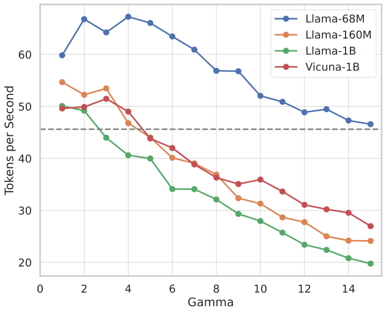
附录 E 和 F 是两组补充结果。原文图 8 把四个模型的 Medusa-2 速度画在一起；表 4 在另一个数据集 AlpacaEval 上重复了实验，加速比和 MT-Bench 上相近：
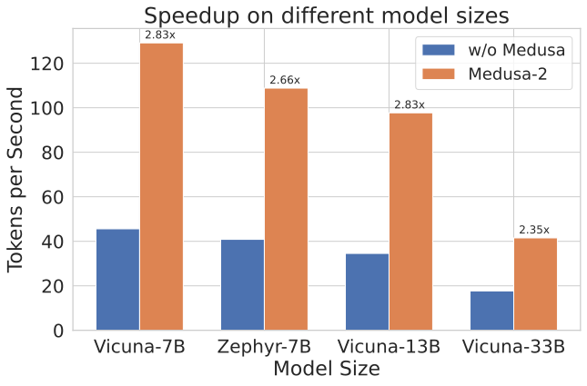
| 模型（AlpacaEval，论文表 4） | 原模型速度（token/s） | Medusa 速度（token/s） | 加速率 | 加速比 |
|---|---|---|---|---|
| Vicuna-7B | 37.07 | 106.76 | 3.23 | 2.88 |
| Vicuna-13B | 29.01 | 91.54 | 3.28 | 3.16 |
| Vicuna-33B | 17.87 | 40.43 | 2.85 | 2.26 |
| Zephyr-7B | 34.21 | 99.50 | 3.08 | 2.91 |
- 原文图 8 的图注说“用自蒸馏训练的模型（Zephyr-7B、Vicuna-13/33B）加速较弱”，但 §3.1 和表 1 的说明里，Vicuna-13B 的头是直接用 ShareGPT 训练的。两处说法不一致，以正文为准。
- 表 4 隐含的单步开销（加速率 ÷ 加速比）只有 1.04–1.26，和表 1 在 MT-Bench 上的 1.18–1.27 不完全一致，例如 Vicuna-13B 在 AlpacaEval 上的开销只有约 1.04（推算）。论文没有解释两个数据集上开销的差别。
5.4 消融实验：树、门槛和两阶段训练各贡献多少（论文 §3.3）
树的配置。这组实验在 MT-Bench 的写作和角色扮演两类题上，用 Medusa-2 Vicuna-7B 进行。蓝点是随机抽取的各种笛卡尔积（稠密）树，红星是按 §4.3 搜出来的稀疏树。
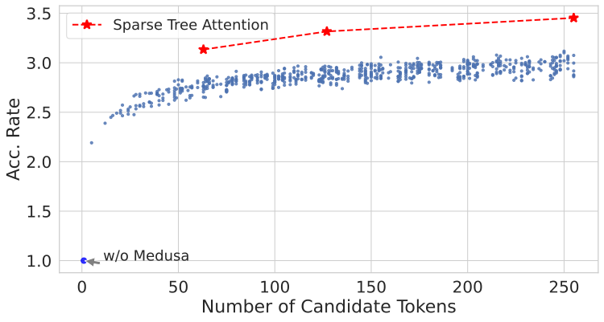
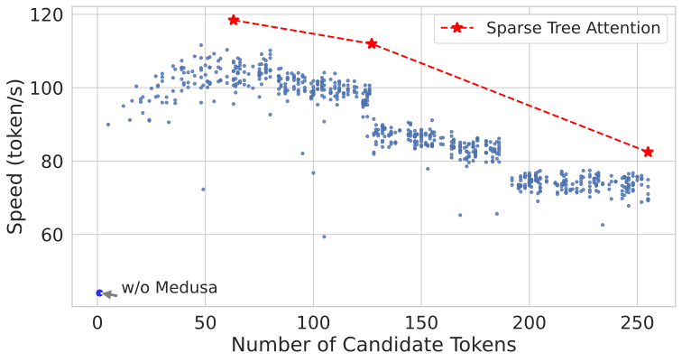
作者对右图的解释是：候选一多，线性层和注意力里的矩阵乘法变得很重，验证从受带宽限制变成了受算力限制（本页 §1 的估算和 §6 的分析）。更复杂的树确实能提高加速率，但代价是每一步变慢；如果加速率的提升抵不过单步开销的增长，整体反而变慢。速度曲线在某些候选数上台阶式下降，论文没有解释，本站推测和 GPU 矩阵乘法按固定大小分块计算有关：token 数刚越过一个分块边界时，就要多算一整块。
典型接受的门槛。这组实验同样在写作和角色扮演两类题上、用 Medusa-2 Vicuna-7B 进行，温度固定为 0.7。按 η 采样的做法令 \(\delta=\sqrt{\epsilon}\)，把 \(\epsilon\) 从 0.01 以 0.01 为步长扫到 0.25。
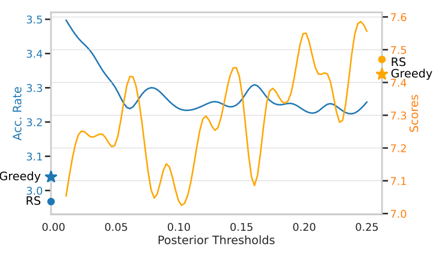
作者从这张图读出一个取舍：\(\epsilon\) 越大，门槛越严，质量越高，加速率越低；在需要创造性的任务上，随机采样的分数比贪心高，而典型接受在 \(\epsilon\) 较大时能和随机采样相当。
两阶段训练。表 2 比较了 Vicuna-7B 上几种做法的 MT-Bench 分数（GPT-4 打分，越高越好）：
| 做法（论文表 2） | 质量 | 加速比 |
|---|---|---|
| 原模型（基线） | 6.17 | — |
| 直接把主干和头一起微调（不用 §3.2 的配方） | 5.925 | — |
| Medusa-1（只训头） | 6.23 | 2.18 |
| Medusa-2（两阶段配方） | 6.18 | 2.83 |
直接微调让分数掉了约 0.25，按配方训练的 Medusa-2 则和原模型持平，同时比 Medusa-1 更快。论文没有给“直接微调”的加速比。
各项技术的累积贡献。论文在结论部分用表 3 总结了每一步改进带来的加速（Vicuna-7B 的大致数字）：
5.5 结果的份量
这一节的数字本身是可信的，但它们回答的是一个很窄的问题：在批大小为 1、以 Hugging Face 逐 token 解码为基线、用 GPT-4 给 MT-Bench 打分来衡量质量时，Medusa 能快多少。换一个条件，答案会明显不同。下面逐条说明比的是什么、配平了什么、没配平什么。
基线偏弱，而且把固定开销也算进了收益。按本页 §1 的估算，A100-80GB-PCIe 上 Vicuna-7B 每读一遍参数约 7 毫秒，理论上每秒能生成约 140 个 token；而表 4 里 Hugging Face 基线每秒只有 37 个，每个 token 约 27 毫秒（推算，仓库说明只写了“单张 A100”，没写具体型号）。多出来的时间大部分是 Python 调度、内核启动这类每一步都要付的固定开销。Medusa 减少了解码步数，这些固定开销也就跟着少付了，所以相对一个慢基线的加速比，会比相对一个高度优化的引擎更大。TensorRT-LLM 的（旧版）文档也提醒过这一点：在没怎么优化的标准 PyTorch 实现上用 Medusa，节省的时间会更明显。
加速率不等于加速比。3.47 个 token/步只换来 2.83 倍，因为每一步慢了约 22%。在更优化的引擎里，普通解码的一步更接近带宽极限，而验证 64 个候选的额外计算和多读的 1.5 GB 头权重不会因此变少，单步开销的占比只会更大。
第三方的同条件对比。Spec-Bench（Xia 等，ACL 2024 Findings 的综述附带的统一测试平台）把多种方法放在同一台机器、同一套环境里测。它的 A100 排行榜（单张 A100-80GB，PyTorch 2.5.1，Vicuna-7B-v1.3，贪心解码，FP16，批大小 1，三次运行的平均，2026-10-20 查阅）上，主要方法的整体加速比如下。Vicuna-7B-v1.3 只有官方发布的 Medusa-1 头，所以这里比的应是 Medusa-1（本站推断）：
| 方法（Spec-Bench，A100，Vicuna-7B-v1.3） | 每步平均接受 token 数 | 整体加速比 |
|---|---|---|
| EAGLE-2 | 4.34 | 2.36× |
| EAGLE | 3.58 | 2.10× |
| Hydra | 3.26 | 2.07× |
| Medusa | 2.31 | 1.71× |
| PLD（提示查找） | 1.75 | 1.66× |
| SpS（独立草稿模型） | 2.28 | 1.52× |
| Lookahead | 1.64 | 1.34× |
在这个统一的环境里，Medusa 的 1.71 倍低于论文给 Medusa-1 报告的 2.18 倍（两者的模型版本、头、数据集、基线都不同，不能直接相减），也明显落后于后来的 Hydra 和 EAGLE。
批大小。所有实验都是批大小 1，作者在引言里明说这是“本地部署给个人用”的场景。在线服务通常同时处理几十上百个请求，这时 GPU 已经比较忙，每个请求再塞进 64 个候选，很快就会受算力限制。论文附录 G 自己的模拟显示，批大小增大后加速比迅速缩小，批大小超过 32 时甚至可能变慢（本页 §6）。所以 Medusa 的数字不能直接搬到高并发服务上。
温度与无损。论文没有写主实验的采样温度。如果沿用仓库的 MT-Bench 脚本，8 类题里有 4 类是贪心、4 类是带温度的典型接受，而基线一律是贪心。在贪心的那几类上，Medusa-1 的输出和原模型一致；在其余类别上，典型接受本来就是有损的；Medusa-2 则连主干本身都改了。因此“质量不变”的全部证据，是 GPT-4 给 80 道题打的平均分变化在 ±0.14 以内。这只是一个很粗的检验：它不检验数学题的正确率、代码能不能运行，也不检验长回答里的细节。
和投机解码的比较。表 1 里的投机解码只有 1.47–1.60 倍，但用的是 6800 万参数这类开源小模型，作者也承认 Vicuna 系列没有合适的同系列草稿模型。这说明的是“没有好草稿模型时，Medusa 比凑合用的草稿模型强”，不能说明 Medusa 比一个精心训练的草稿模型强。
硬件。论文正文没有写推理用的是哪种 GPU；仓库说明写的是单张 A100；附录 G 的屋顶线分析用了 A100-80GB-PCIe、A40 和 A6000。换到带宽和算力比例不同的 GPU 上，最优的树大小和加速比都会变。
英文原文 §3 ↗ · 表 1 ↗ · 附录 B ↗ · 附录 D ↗ · 表 4 ↗ · Spec-Bench 排行榜 ↗
6 附录 G：用屋顶线模型看，候选树能开多大，批能开多大
屋顶线图的横轴是算术强度（每从显存读一个字节做多少次浮点运算，FLOP/Byte），纵轴是实际达到的算力（FLOP/s），两轴都是对数刻度。图上有两条“屋顶”：一条斜线，表示受显存带宽限制时能达到的上限（带宽 × 算术强度）；一条水平线，表示芯片的峰值算力。两条线的交点就是拐点。一个算子落在斜线下方时，提高算术强度就能提高实际算力；落到水平线附近时，再提高算术强度也没用了。详见 FlashAttention 精读 §2.2。
附录 G 把 Llama 的一层拆成三类矩阵乘法：生成 Q/K/V 的线性层、注意力里的两次矩阵乘法（\(QK^\top\) 和 \(PV\)）、MLP 里的 up/gate/down 线性层。表 5 列出了它们在预填充、普通解码和 Medusa 并行解码三个阶段的计算量和访存量。要点是：普通解码时每个请求只处理 1 个新 token，线性层每读一遍权重只做很少的运算；Medusa 一次处理 \(q\) 个候选，线性层的计算量变成 \(q\) 倍，而权重仍然只读一遍，所以算术强度也大约变成 \(q\) 倍。注意力也类似：KV 缓存读一遍，可以和 \(q\) 个候选的 query 都算一次。
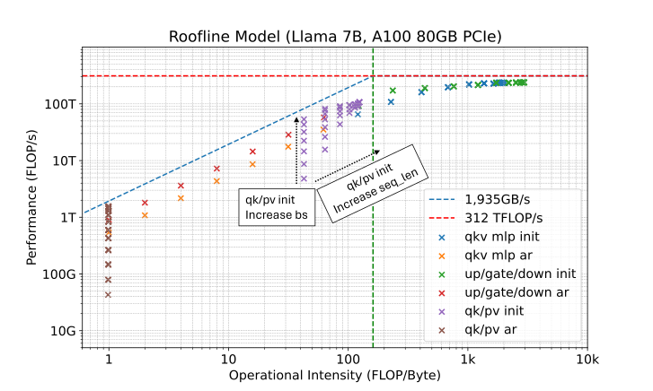
接着，附录 G.2 在 Llama-33B、A100 上测量 Medusa 的多候选能把这些点推多远：
- 注意力。批大小 16、序列长度 1024 时，普通解码的注意力只有约 1.24 TFLOP/s；加上 64 个候选后升到约 54.8 TFLOP/s，论文总结为算力提高 44 倍、算术强度提高 41 倍。这说明多候选正好补上了“解码注意力的算术强度挪不动”这个短板。但固定序列长度、只增大批大小，并不能提高注意力的算术强度。
- 线性层。批大小 1 时，普通解码的 up/gate/down 线性层只有约 1.26 TFLOP/s，64 个候选时达到约 76.6 TFLOP/s，仍在带宽限制区。批大小和候选数一起增大后，实测算力停在约 220–246 TFLOP/s，算术强度却还在涨，说明已经进入受算力限制的区域（论文表 8 读数）。论文的说法是：随着候选数增加，线性层从受带宽限制转为受算力限制。
最后，附录 G.3 用一个简单的模型做模拟。加速率按原文图 4 左图拟合成候选数的对数函数，论文写作 acc rate = 0.477 log(候选数)；从原文图 21 的数值看，这里的 log 应是自然对数，并且还要加上约 1 的常数（候选数为 1 时加速率为 1），这是本站的推断。单步耗时则用前面测出的各算子耗时，模拟 Llama-7B 一个简化的层，忽略验证和接受这些后处理的开销。
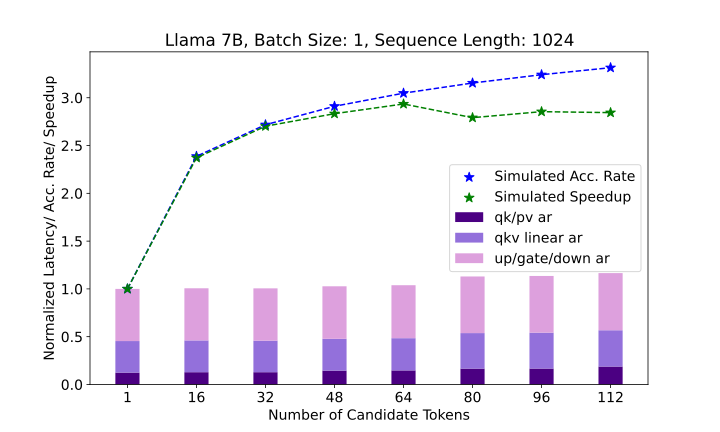
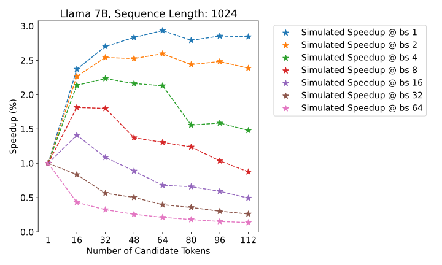
论文从模拟里得出三条结论。第一，候选数存在一个最优区间，批大小 1 时大约是 64，超过以后收益递减。第二，批大小增大时，线性层会从受带宽限制转为受算力限制，加速比随之下降；论文说批大小超过 32 时加速比会下降甚至变成负收益。第三，序列越长，注意力的开销越大，整体加速越低（原文图 23，批大小 4 时，最优候选数在不同序列长度下基本不变）。所以要在规模化部署中用好 Medusa，需要同时调节候选数和批大小，避免进入受算力限制的区域，并优化长序列下的注意力。
英文原文附录 G ↗ · 原文图 9 ↗ · 原文图 21 ↗ · 原文图 22 ↗
7 讨论、相关工作与结论（论文 §4、附录 A）
附录 A.1 把当时的大模型推理加速分成两大类。解码受带宽限制，最直接的办法是开大批，但参数和 KV 缓存都占显存，批开不大。于是第一类方法想办法减少显存占用，从而减少搬运、放下更大的批：多查询注意力（MQA）和分组查询注意力（GQA）减少 KV 头的数量；按重要性只保留一部分 KV（H2O）；vLLM 的分页内存管理减少 KV 缓存的碎片；以及各种量化方法（SmoothQuant、LLM.int8()、GPTQ、AWQ、SqueezeLLM 等）。第二类方法减少解码步数，投机解码是代表，它和第一类方法正交，可以叠加使用。Medusa 属于第二类，区别在于用原模型自己做预测，而不是引入额外的草稿模型。
和同期的树结构方法比，SpecInfer 用一组小模型分别出候选，再用树状注意力合并验证；分级投机解码给草稿模型再加一层更小的草稿，并按层批量处理树。它们都需要专门预训练、并和目标模型对齐的草稿模型，管理多个草稿模型的并行也很麻烦。Medusa 直接取各个头的前几名，搭出一棵静态的稀疏树，不需要自回归地生成候选，也不在运行中调整树的结构。
结论部分，作者把 Medusa 的优点归结为简单、参数高效、容易集成进现有系统：不需要专门的草稿模型；典型接受免去了拒绝采样的麻烦，同时给出合理的输出；两种训练方式在各种模型和提示类型上都保住了输出质量；总体加速 2.3–2.8 倍。作者也再次说明，论文为了简单只研究了批大小 1，但这些想法可以推广到更大的批，并提到 TensorRT（即 TensorRT-LLM）和 Hugging Face TGI 已经在论文之后支持了这种用法。
后来怎么样了
Medusa 先以博客和代码的形式发布（GitHub 仓库创建于 2023-09-10），技术报告 2024-01 上了 arXiv，之后发表在 ICML 2024。它的几个核心部件里，树状验证和在目标模型隐状态上接一个轻量草稿部件这两个想法被后来的方法普遍继承；而“各个头互相独立、一次猜完”的具体做法，很快被更好的设计超过。
- 让头之间有先后依赖：Hydra（Ankner 等，arXiv 2402.05109）。论文指出，到那时为止所有草稿头都是“顺序独立”的：猜第 \(t+3\) 个 token 时并不知道自己对第 \(t+2\) 个猜了什么，也就是本页 §2.1 示意图里的问题。Hydra 头在猜下一个位置时把前面已经猜出的 token 作为输入，是 Medusa 头的直接替换。作者调好的配方 Hydra++ 报告解码吞吐比 Medusa 高至多 1.31 倍、比自回归解码高至多 2.70 倍。
- 在特征层自回归地打草稿：EAGLE 系列（Li 等，arXiv 2401.15077，ICML 2024）。EAGLE 的草稿模型是一个 Transformer 层，在倒数第二层的特征上逐个往后预测，并把“提前一步的 token”也作为输入，消除采样带来的不确定性。EAGLE 论文报告草稿准确率约 0.8，而 Medusa 约 0.6；在 MT-Bench 上比 Medusa 快 1.5–1.6 倍（Medusa 一方的数字取自 Medusa 技术报告，不是在同一环境下重测的），并且在贪心和采样两种设置下都保证输出分布不变，这是 Medusa 的典型接受做不到的。它为 7B 模型训练的草稿部分只有 0.24B 参数。之后 EAGLE-2 把静态树换成按置信度动态生长的树，EAGLE-3 又改为融合多层特征并在训练时模拟多步起草。详见 EAGLE 精读 和 EAGLE 1 / 2 / 3 拆解页。
- 循环草稿头：ReDrafter（Apple，arXiv 2403.09919）。同样以目标模型的隐状态为条件，但草稿部件是一个循环神经网络，用束搜索产生候选、用动态树注意力去掉重复前缀，并从目标模型蒸馏训练；报告在 H100 上用 PyTorch 实现把 Vicuna 在 MT-Bench 上加速至多 2.8 倍。
- 把多头预测搬进预训练：多 token 预测（Gloeckle 等，Meta，arXiv 2404.19737）。它在共享主干上接 \(n\) 个独立的输出头，从预训练开始就让模型同时预测后面 \(n\) 个 token，结构上和 Medusa 一样是“并列独立的头”，但目的首先是让模型学得更好；作者报告 4 token 预测的模型推理时最多快 3 倍。DeepSeek-V3 的 MTP 模块则特意改成按顺序预测、保持完整的因果链，训练完还能留下来做投机解码，见 DeepSeek-V3 精读 §2.2。可以把它看作 Medusa-2“联合训练、原生支持多 token 预测”思路在预训练阶段的延伸。
- 推理引擎的支持：先接入，后移除（以下为 2026-10-20 查阅各项目仓库的结果）。
- Hugging Face TGI 实现过 Medusa（服务端有
layers/medusa.py，文档有训练 Medusa 头的教程）。TGI 现已进入维护模式，README 建议改用 vLLM、SGLang 等引擎，GitHub 仓库已归档为只读。 - TensorRT-LLM 在旧的 TensorRT 后端里支持 Medusa，树的形状是运行时参数。现行的 PyTorch 后端文档列出的是 Draft/Target、EAGLE 3、NGram、MTP、PARD、DFlash 等方法，没有 Medusa；旧 TensorRT 后端的各模型示例目录（包括 Medusa 示例）已于 2026-07-02 删除。
- vLLM 在 2024-07-10 加入 Medusa（PR #4978），实现的是每个头只取第一名的链式草稿，没有用 Medusa 的树。2026-10-15，PR #61701 把 Medusa 和 MLP speculator 一并移除，理由是 Medusa 不被新的 Model Runner V2 支持，而 EAGLE、MTP、DFlash、DSpark 已经覆盖了它的用途。
- SGLang 的仓库里找不到 Medusa 的实现文件（按文件名查找），它支持的是 EAGLE、EAGLE-3、独立草稿模型、n-gram 等（见 投机解码精读“后来怎么样了”）。
- Hugging Face TGI 实现过 Medusa（服务端有
为什么 Medusa 头输给了 EAGLE 式的草稿器？把上面的事实放在一起，原因大致有五条：
- 头猜得不够准。各个头只看同一个 \(h_t\)，看不见前面猜了什么，越往后越不准（EAGLE 测得的草稿准确率约 0.6 对 0.8）。接受长度上不去，再好的树也补不回来。Hydra 和 EAGLE 都从“让后一个猜测依赖前一个猜测”入手。
- 采样时不无损。服务商需要保证“开了加速，模型的回答分布不变”，典型接受做不到，官方代码也没有实现无损的拒绝采样；EAGLE 系列从一开始就保证无损。
- Medusa-2 改了主干。它最好的加速来自联合训练，但对一个已经发布、已经评测过的模型，服务方通常不愿意换掉它的权重；只训头的 Medusa-1 又只有约 2 倍。
- 静态树和批量服务不合拍。一棵 64 个节点的树是为批大小 1 调出来的；附录 G 自己的模拟显示，批一大就会进入受算力限制的区域。动态树（EAGLE-2）和按负载调节投机长度的做法更适合服务场景。
- 部件并不轻。每个头都带一个完整的词表投影，5 个头的参数约占 7B 模型的 11%（推算）；EAGLE 复用原模型的嵌入层和 LM 头，草稿部分小得多。
Medusa 的历史意义在于它证明了“不要独立草稿模型，在目标模型自己的隐状态上接一个小部件，用树一次验证多条候选”这条路走得通，而且门槛很低：单卡几小时就能给一个现成模型训好头。后来的草稿头路线，基本都是在这个框架里把草稿部件做得更聪明。
作者
单位按论文署名。背景只列可公开查证的信息：作者主页、实验室与机构页面。
影响力
- 引用：见页首（Semantic Scholar 快照）。
- 发表：ICML 2024，收录于 PMLR 第 235 卷第 5209–5235 页。arXiv v1 为 2024-01-19，v2 为 2024-06-05，v3 为 2024-06-14（本页依据 v3）。
- 代码：FasterDecoding/Medusa，2,775 个 star、205 个 fork（截至 2026-10-20），Apache-2.0 许可；仓库创建于 2023-09-10，最后一次推送为 2024-06-25。官方在 Hugging Face 上发布了 Vicuna-7B/13B/33B（v1.3）的 Medusa-1 头，以及 Vicuna-7B/13B/33B（v1.5）和 Zephyr-7B-β 的 Medusa-2 模型。
- 采用：仓库 README 列出 TensorRT-LLM、Hugging Face TGI、阿里的 RTP-LLM 采用了 Medusa；vLLM 曾在 2024-07 加入链式版本的 Medusa。截至 2026-10-20，vLLM 已移除 Medusa，TensorRT-LLM 的现行后端不再列出 Medusa，TGI 已进入维护模式（详见上文“后来怎么样了”）。
延伸阅读
- 相关精读：投机解码、EAGLE
- 投机解码结构拆解：可点击的一步流程图、KV 缓存回退、简答题。
- EAGLE 1 / 2 / 3 拆解页：特征层草稿、动态草稿树、训练时测试。
- 推理基础：屋顶线模型：为什么解码受显存带宽限制。
- 返回论文书架
原文：Tianle Cai, Yuhong Li, Zhengyang Geng, Hongwu Peng, Jason D. Lee, Deming Chen, Tri Dao. Medusa: Simple LLM Inference Acceleration Framework with Multiple Decoding Heads. ICML 2024. arXiv:2401.10774，以 CC BY 4.0 许可发布。 本页原文图 1–9（图 7 只取了子图 a）、21、22 取自 arXiv HTML 版原文（v3）；其中图 2 只缩小了像素尺寸（原图 7968 像素宽，缩到 1800 像素宽），其余未做修改。其余示意图、表格整理与全部文字为本站撰写，是对论文的中文精读笔记，并非翻译。数字与结论以原文为准。